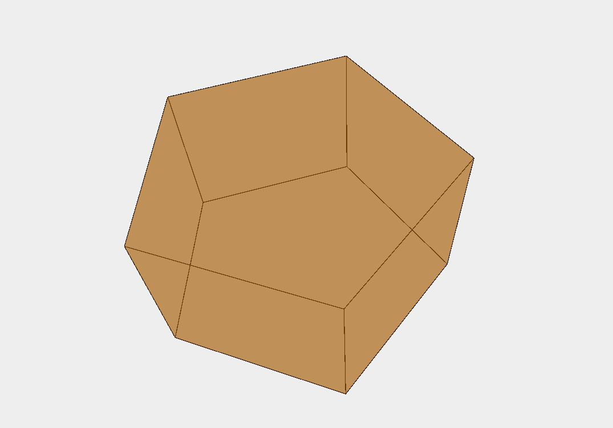
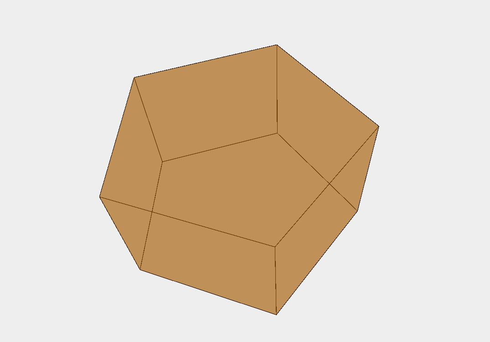

Ai Character Generator
https://github.com/PaulShiLi/rpgGenerate-SpaceInvadersOver the summer of '22, I worked with a team of 5 others to train natural language processing AI models to make an RPG character generator. The generator would be split up to three different AI models: Backstory, Personality, and Physical Descriptions. In addition to this, we only had two weeks to do it.
To get the large amount of training data for out models we had to scrape through countless websites, Dungeons & Dragons rulebooks, and even GPT-3 generated responses. After, we used the aitextgen Python library to train our Distil GPT-2 models on these datasets. This process took countless hours and sometimes even days.
To deploy these AI models for use, we then created a website using the Django framework and a Discord Bot. If you want to try our AI models you can run either the website or Discord bot from our GitHub.

3D Engine in Java
https://github.com/kacperlet/3D-Engine-JavaAs a challenging side-project, I attempted to create my own 3D engine with Java and it's built in 2D graphics library.
To create a simple cube, it required me to create a projection function that returns a transformed X and Y when given a Z value. Then, I researched rotational matrices and applied them to my program to rotate them on any axis.
After, I created other three dimensional shapes with customizable parameters such as heigth, length, and width. One of my more customizable function also takes a value n to create an n-sided polyonal prism. This allowed me to easily create a simple triangular prism or a pentadecagonal prism.
I'm happy to have done this and I hope I can build upon it more in the future.

 

Lightsaber CSS
https://github.com/kacperlet/lightsaberAfter becoming more adept at web development and using CSS I decided to test my CSS skills by creating a ligthsaber with pure CSS. No images were used at all.
In less than two days I was able to create a ligthsaber with customizable colors, a retractable blade, a way to swing it using JavaScript, and audio cues for when you do swing it.
You can access a live demo of it below.